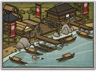

Basic Unit Statistics (can be modified by difficulty level, arts, skills, traits and retainers)
| Recruitment Cost | 400 | |
| Upkeep Cost | 100 | |
| Melee Attack | 12 | 34% |
| Charge Bonus | 12 | 24% |
| Bonus vs Cavalry | 0 | 0% |
| Melee Defence | 7 | 20% |
| Armour | 3 | 20% |
| Morale | 10 | 20% |
Strengths & Weaknesses
- Can deploy outside the deployment zone.
- Good melee attack and morale.
- Weak melee defence and armour.
- Vulnerable to cavalry and missiles.
Requires
- Buildings: 

Description
Piracy prepares men to fight unfairly and with deceit. A wise commander uses these skills.
These wako raiders are lightly armed and wear little armour, which contributes to their ability to move with stealth and remain hidden. Indeed, wako raiders can hide almost anywhere: an enemy may end up convinced that they can hide behind every rice stalk! They can also move without revealing their position, making them useful for tactical surprises. Best of all, for a commander, before the battle they can actually be positioned outside the army's normal deployment area. That they also have a good close attack, and good morale makes them even more useful as a weapon. As far as the Chinese were concerned, all the Japanese were pirates, or in league with pirates. It wasn't surprising that the Chinese were angered and frustrated. The Shogunate refused to address the problem, and the local lords were cheerfully profiting from piracy. The Chinese banned trade with Japan, but to no effect. Even punitive attacks by the Chinese failed to solve the problem of piracy. The Japanese had no real wish to rein in their pirates, for how else would they get stolen Chinese goods so cheaply?